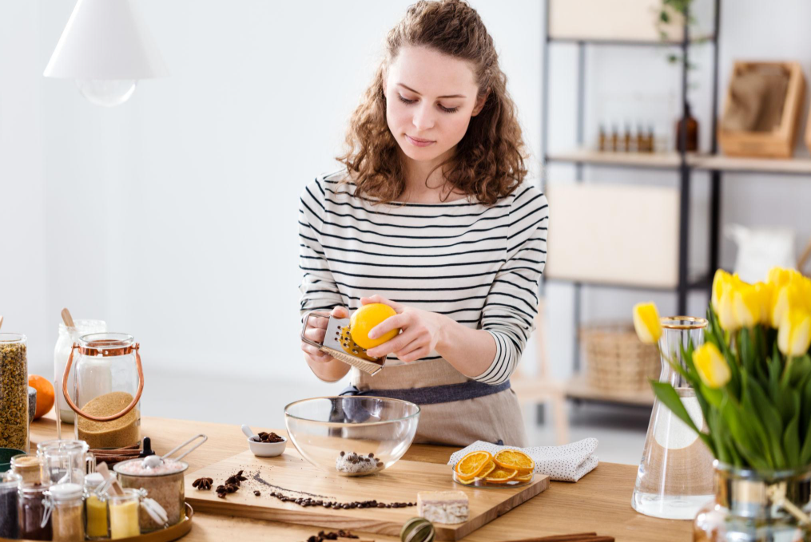
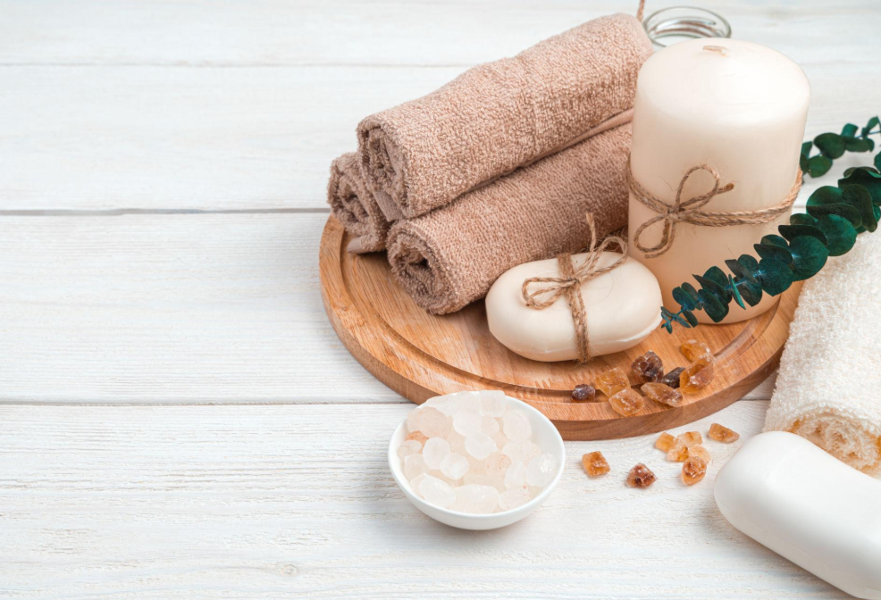
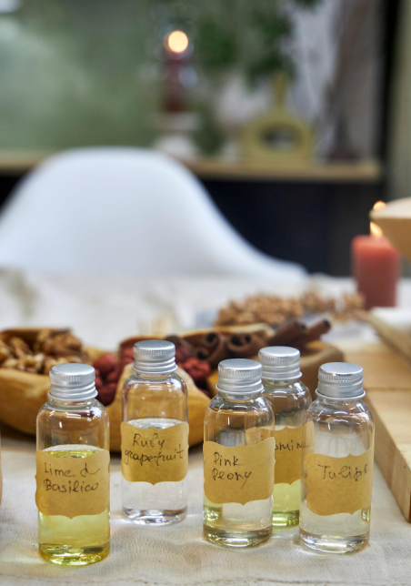

PURELOOM NATURALS
About Us
Our Story
At PureLoom Naturals, we believe that the smallest moments of your day
deserve the most care.
What began as a simple idea — to create products
that feel gentle, natural, and comforting — has grown into a journey of crafting
experiences. Not just soaps, candles, or perfumes, but rituals that transform everyday
life into something meaningful.
Every product we create is inspired by nature’s
simplicity and designed to bring a sense of calm, warmth, and balance into your space.

More Than Products
We do not just make skincare or home essentials. We create moments.
A quiet evening lit by a soft candle glow.
A refreshing start to your
day with a soothing soap.
A lingering scent that stays with you long after the moment has passed.
Our goal is simple — to turn ordinary routines into extraordinary experiences.

Crafted with Care
From sourcing ingredients to the final product, every step is intentional.
We combine natural elements with modern design to ensure that each item not
only performs beautifully but also looks elegant in your space.
Whether it is the texture of a soap, the burn of a candle, or the scent of
a perfume — every detail matters.
